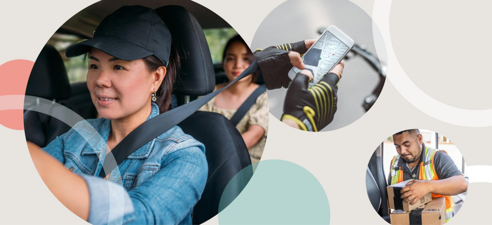
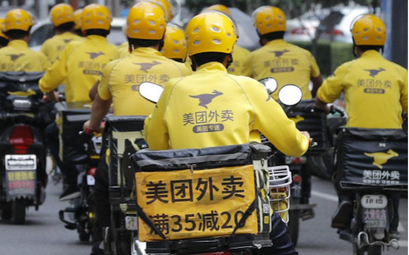

Plataformização: conceito, surgimento e cenário de destaque no Brasil
É o processo em que infraestruturas digitais — aplicativos e algoritmos — passam a organizar setores da economia, o governo das relações e as práticas culturais da sociedade.
Poell, Nieborg & van Dijck (2019/2020); Helmond (2015); Grohmann (2020).
01 / INFRAESTRUTURA
Dados
As plataformas capturam, processam e usam dados como parte central de seu funcionamento.
02 / MERCADO
Mercados multilaterais
Conectam grupos diferentes — como trabalhadores, consumidores e empresas — em um mesmo ambiente digital.
03 / GESTÃO
Governança algorítmica
Algoritmos organizam tarefas, pagamentos, avaliações e desempenho.
Origem e pioneiros
Entre os motores da plataformização estão a crise de 2008, a popularização de smartphones e GPS e o contexto de políticas neoliberais. No mundo, aparecem Amazon Mechanical Turk (2005) e Uber (2009). No Brasil, Easy Taxi e iFood (2011), 99 (2012) e Uber (2014).
2005Amazon MTurk
2009Uber
2011Easy Taxi e iFood
201299
2014Uber no Brasil
Contexto histórico: motores e expansão das plataformas.
O mito da novidade e a colonialidade
Ludmila Abílio, Sem Maquiagem: a precarização feminina já existia antes dos aplicativos, como no trabalho de revendedoras de cosméticos.
Vitor Filgueiras, É Tudo Novo, de Novo: a retórica da “novidade” pode servir para justificar a retirada de direitos.
Grada Kilomba, Memórias da Plantação: o material relaciona a plataformização à reatualização colonial e ao silenciamento algorítmico; registra que mais de 85% dos entregadores em Salvador seriam negros.
Leituras citadas no debate sobre trabalho, novidade e colonialidade.
Trabalho invisível e caminhos
O trabalho digital também inclui fazendas de cliques, associadas à precarização, e tarefas ligadas à manipulação algorítmica e à desinformação.
Fazenda de cliques: uma forma de trabalho digital pouco visível.
Trabalho por aplicativo e exposição pública
Os vídeos enviados mostram episódios de conflito e exposição envolvendo trabalhadores de entrega.
CASO 01
Miss perde o título após debochar de entregador de comida
CASO 02
Homem ofende motoboy com xingamentos racistas
02
COTIDIANO • ESCOLHAS • TRABALHO
Realidade do trabalhador das plataformas
EM DESENVOLVIMENTO
O sumário prevê este tema. O slide disponível apresenta as perguntas “Quais são os empregos mais comuns?” e “Por que as pessoas escolhem esse trabalho?”, ainda sem respostas.
03
ESCALA GLOBAL • REALIDADE LOCAL
Plataformização como fenômeno local e mundial
As plataformas digitais conectam trabalhadores, consumidores e empresas e reorganizam relações de trabalho em diferentes lugares.

Trabalho mediado por plataformas em diferentes atividades.
Como se manifesta
Intermediação digital: aplicativos conectam quem oferece serviços a quem os consome.
Flexibilização: possibilidade de escolher horários e aceitar ou recusar atividades.
Gestão algorítmica: sistemas organizam tarefas, pagamentos, avaliações e desempenho.
Novas relações de trabalho: atividades mediadas por aplicativos, muitas vezes sem vínculo empregatício tradicional.
Um modelo global, realidades diferentes
Estados Unidos: expansão de empresas como Uber e Lyft no transporte sob demanda.
Europa: debates sobre direitos trabalhistas, proteção social e regulação.
China: plataformas como Meituan e Ele.me integram entregas e serviços ao cotidiano.
Escopo geográfico, empresas e setores
Exemplos de plataformas e setores por região.
Entrega por aplicativo no contexto europeu.

Entregadores de aplicativo na China.
A plataformização para além do transporte
No jornalismo e na informação, veículos tradicionais dependem de redes sociais e mecanismos de busca para distribuir notícias. Na educação, plataformas de aprendizagem, monitoramento e conteúdos padronizados entram na rotina de escolas e universidades.
Uma realidade próxima: Brasil
Entrega por aplicativo no Brasil.Motorista consulta o aplicativo durante a jornada.Entregadores reunidos durante o trabalho.
2 milhõestrabalhadores por aplicativos em 2025, segundo o slide72,1%na informalidade34%com cobertura previdenciária1,9%da população ocupada
O crescimento das plataformas ocorre em um cenário de desigualdade social.
04
CAPITALISMO • IDEOLOGIA • CONTROLE
Neoliberalismo e plataformização
Como o neoliberalismo fomenta a plataformização?
“A revolução das tecnologias de informação e comunicação não criou a precarização; ela forneceu o aparato técnico indispensável para que as políticas neoliberais de privatização, terceirização e desregulamentação alcançassem uma escala planetária e penetrassem nos espaços mais íntimos da vida cotidiana.”Ursula Huws, 2017, p. 318
Ursula Huws
A tese apresentada é que o neoliberalismo ataca os empregos padrão por meio de processos que se desenvolvem desde a década de 1970. Aplicativos automatizam e ampliam terceirizações e processos que já estavam em curso:
Privatização e terceirização de departamentos e serviços.
Padronização e codificação de tarefas complexas em rotinas mensuráveis.
Deslocalização de tarefas para lugares onde a mão de obra é mais barata e menos regulada.
Nick Srnicek, Platform Capitalism (2017)
O slide situa a análise no pós-crise de 2008 e afirma que as plataformas são produto da financeirização neoliberal.
Capital ocioso e juros baixos: investidores direcionam recursos a fundos de risco no Vale do Silício.
Crescimento subsidiado pelo prejuízo: capital especulativo permite operar por anos sem lucro.
Plataformas enxutas: terceirizam trabalhadores, ativos e manutenção, enquanto preservam o controle da plataforma e a extração de renda.
Tom Slee, What's Yours Is Mine (2015)
Discurso colaborativo
Uma estética comunitária acompanha a ideia de que o mercado livre resolveria melhor que o Estado.
Evasão regulatória
O material usa a entrada da Uber sem licenças de transporte e a posterior criação de uma categoria de motoristas por aplicativo nos EUA como exemplo.
Risco transferido
Avaliações por estrelas passam a substituir formas de fiscalização e contrato. Nota baixa pode significar bloqueio sem indenização ou defesa.
CICLO DE RETROALIMENTAÇÃO
Baixa intervenção estatalSubempregos e influência políticaInsegurança financeira e desempregoDiscurso do “empreendedor de si”Concentração de lucro
Ciclo de retroalimentação: neoliberalismo e plataformização.
Perspectivas do Sul Global
“A plataformização do trabalho não se desenvolve de maneira homogênea no mundo: no Sul Global, ela se articula diretamente com a informalidade estrutural, o racismo e as heranças coloniais, fazendo com que a extração de dados e de mais-valor alimente centros financeiros do Norte Global a partir da precarização periférica.”Rafael Grohmann, 2021, p. 14
Ursula Huws, A Formação do Cibertariado: trabalho virtual em um mundo real.
Ursula Huws, A Formação do Cibertariado
Huws analisa o trabalho virtual dentro de um mundo material, atravessado por terceirização, deslocalização e mudanças nas relações de trabalho.
Ruy Braga, A Rebeldia do Precariado (2017)
O slide destaca que países periféricos não consolidaram plenamente um Estado de Bem-Estar Social ou uma sociedade salarial universal. A precarização aprofunda a informalidade e empurra trabalhadores para ocupações de alta rotatividade, baixos salários e pouca proteção sindical.
Rafael Grohmann, Os Laboratórios de Trabalho Digital (2021)
O material identifica duas camadas: o colonialismo de dados, em que dados e valor são extraídos na América Latina e apropriados por centros do Norte Global; e a apropriação da “viração” local, quando plataformas adaptam seus algoritmos às desigualdades existentes.
05
AUTOGERENCIAMENTO • PRECARIZAÇÃO
Submissão e exploração
A uberização não nasce com os aplicativos. O material relaciona formas atuais de gestão a trabalhos precários anteriores, como a revenda de cosméticos e o trabalho de motoboys.
Ludmila Abílio, Sem Maquiagem (2014)
Autogerenciamento subordinado: o trabalhador escolhe o horário, mas a empresa define as regras.
Subsunção real da “viração”: o “se virar” do trabalhador passa a ser gerido pela empresa.
Trabalhador just-in-time: fica disponível, mas recebe apenas pelo que produz.
Ricardo Antunes, O Privilégio da Servidão (2018)
Infoproletariado: classe trabalhadora da era digital, próxima do conceito de cibertariado de Ursula Huws.
Privilégio da servidão: em contexto de desemprego, qualquer ocupação pode parecer favorável.
Falso “autônomo”: categoria que pode ser usada para negar direitos trabalhistas.
06
TERRITÓRIO • CIDADANIA • SALVADOR
Influência da geografia brasileira na plataformização
O espaço não é apenas cenário. A técnica e a informação definem quem acessa os fluxos da globalização e quem fica de fora.
Espaços luminosos
Alta densidade técnica e informacional, com grande fluxo de capital.
Espaços opacos
À margem dos fluxos dominantes, como periferias de Salvador.
Contra-racionalidades
Formas de resistência construídas no território, como grupos de entregadores.
Verticalidades e horizontalidades
Verticalidades: comando à distância exercido pela plataforma.
Horizontalidades: o território vivido — rua, bairro e pontos de apoio.
Cidadania mutilada e Salvador
“Onde não há cidadão, há o consumidor mais-do-que-perfeito.”Milton Santos, O Espaço do Cidadão (1987)
O slide relaciona a plataformização ao lugar onde cada pessoa vive e registra crescimento de 33,2% de trabalhadores por aplicativo no Nordeste entre 2022 e 2024, ante 25,4% no Brasil.
07
AUTONOMIA • CONTROLE • POLÍTICA
Visão de microempreendedor e posicionamento político
Se o trabalhador é seu próprio patrão, por que ele não tem controle sobre todas as regras do próprio trabalho?
CONTEÚDO PENDENTE
O slide enviado apresenta o título e a pergunta de abertura. Você pode acrescentar aqui a análise e o posicionamento político do grupo.
08
SAÚDE MENTAL • SAÚDE FÍSICA • SEGURANÇA
Impactos da plataformização na saúde dos trabalhadores
O material cita um relatório da Organização Internacional do Trabalho e relaciona flexibilização de direitos e informalização ao adoecimento mental e físico, a acidentes e à mortalidade laboral. O slide menciona mais de 840 mil mortes anuais associadas a esses fatores. Também descreve o capitalismo de plataforma como uma configuração que usa tecnologias e algoritmos para organizar, gerenciar e controlar a força de trabalho.
Saúde mental
Exaustão: exigência de disponibilidade constante.
Ansiedade: pouco sono e descanso, baixa remuneração e responsabilização individual.
Vigilância algorítmica: pressão por metas, avaliações de clientes e medo de bloqueios.
Saúde física e proteção social
Falta de água e de locais para descanso.
Riscos de doenças cardiovasculares e transtornos mentais.
Ausência de garantias trabalhistas e insegurança alimentar.
Acidentes e violência urbana
O slide apresenta os seguintes casos oficiais e estimativas de subnotificação de acidentes com entregadores de aplicativos:
Período
Casos oficiais
Subnotificados (estimativa)
Total estimado
2023
8.630
~48.900
~57.530
2024
10.034
~56.860
~66.890
2025
11.662
~66.085
~77.750
2026 (até jul.)
3.885
~22.015
~25.900
Total
34.211
~193.860
~228.070
Segundo pesquisa da GigU com a Jangada Comunicação citada na apresentação, 59,1% dos motoristas e entregadores de aplicativo no Brasil já sofreram violência ou assédio no trabalho; 32,8% dizem sentir-se inseguros na maior parte do tempo.
09
DIREITOS • VÍNCULO • PROTEÇÃO
Legislação atual e perspectivas locais
Quem protege o trabalhador de aplicativo?
O problema apresentado
Trabalhadores classificados como autônomos.
Ausência de acesso automático aos direitos da CLT.
Controle das plataformas sobre pagamentos, avaliações e bloqueios.
O que está em discussão
PLP 12/2024: remuneração mínima e previdência para motoristas.
Tema 1.291 — STF: discussão sobre vínculo empregatício.
PL 5.253/2026: propostas de proteção social e transparência.
10
PERSPECTIVAS • PROPOSTAS
Legislação e aplicação da plataformização: o que precisa mudar?
01
Remuneração justa
Pagamentos adequados aos custos do trabalhador.
02
Proteção social
Previdência e amparo em situações de risco.
03
Transparência
Clareza sobre algoritmos, pagamentos e bloqueios.
04
Direitos trabalhistas
Mais segurança e garantias para os profissionais.
11
LEITURAS E FONTES
Referências
ABÍLIO, Ludmila Costhek. Sem maquiagem: o trabalho de um milhão de revendedoras de cosméticos. São Paulo: Boitempo, 2014.
ASSAD, Renato Beneduci. Capitalismo de plataforma: entre as novas formas de exploração e a gênese e luta de uma nova classe trabalhadora. Trabalho de Graduação, Faculdade de Filosofia, Letras e Ciências Humanas, Universidade de São Paulo, 2023.
DIREITOS DE VERDADE. As plataformas digitais e o impacto na saúde do(a) trabalhador(a). Disponível em: direitosdeverdade.com.
FILGUEIRAS, Vitor Araújo. “É tudo novo”, de novo: as narrativas sobre grandes mudanças no mundo do trabalho como ferramenta do capital. São Paulo: Boitempo, 2021.
GROHMANN, Rafael. Plataformização do trabalho: entre a dataficação, a financeirização e a racionalidade neoliberal. Revista Eptic, v. 22, n. 1, p. 106–122, 2020.
HELMOND, Anne. The platformization of the web: making web data platform ready. Social Media + Society, v. 1, n. 2, 2015.
INTERNATIONAL LABOUR ORGANIZATION (ILO). O ambiente psicossocial de trabalho: tendências globais e orientações para a ação. Genebra: OIT, 2026.
KILOMBA, Grada. Memórias da plantação: episódios de racismo cotidiano. Rio de Janeiro: Cobogó, 2019.
Plataformização, precarização do trabalho e saúde mental: um estudo sobre motoristas plataformizados em Manaus/AM. Revista Brasileira de Iniciação Científica, v. 13, e026013, 2026.
ANTUNES, Ricardo. O privilégio da servidão. São Paulo: Boitempo, 2018.
SANTOS, Milton. A natureza do espaço: técnica e tempo, razão e emoção. São Paulo: Hucitec, 1996.
SANTOS, Milton. O espaço do cidadão. 1987.
IBGE. PNAD Contínua 2024: trabalho por plataformas digitais.
BRASIL. Câmara dos Deputados. Projeto de Lei Complementar nº 12/2024.
BRAGA, Ruy. A rebeldia do precariado: trabalho e neoliberalismo no Sul Global. 2017.
HUWS, Ursula. Labor in the Global Digital Economy: The Cybertariat Comes of Age. 2014.
SLEE, Tom. What's Yours Is Mine: Against the Sharing Economy. 2015.